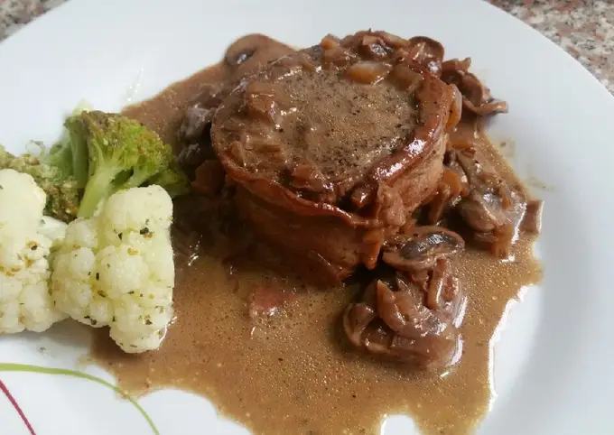

Filet Mignon
Volver a recetas
Ingredientes
- 200 g de Crema de Leche
- 500 g de lomo de res
- 4 lonjas de tocineta
- 1 cebolla blanca
- 500 g champiñones
- 1 rama pequeña tomillo
- Puré de papas para acompañar
- cabuya para amarrar los lomos
- Sal y pimienta al gusto
- 2 cucharadas de aceite
- 1 cucharada de mantequilla
- 2 dientes de ajo
Opcionales
- 2 cucharadas de nueces
- 1 taza vino
- freidora de aire
Preparación
- En una tabla: ponemos los lomos de res (o lomo de cerdo) y los envolvemos con las lonjas de tocineta y amarramos con la cabuya
- Llevamos los lomos a una sartén a fuego medio alto con un poco de aceite y los doramos por todos lados. Sacamos y reservamos.
- Bajamos el fuego a medio bajo y agregamos la mantequilla con la cebolla y el ajo, dejamos cocinar mezclando. Añadimos los champiñones y dejamos cocinar por 2 minutos.
- Agregamos el vino blanco (opcional) y dejamos reducir hasta casi seco y agregamos la Crema de Leche Alquería y mezclamos.
- Incorporamos los lomos y las nueces, tapamos y dejamos cocinar por 5 minutos.
- Servimos inmediatamente con perejil y acompañamos con puré de papas.
Tu resultado final se debe ver así
